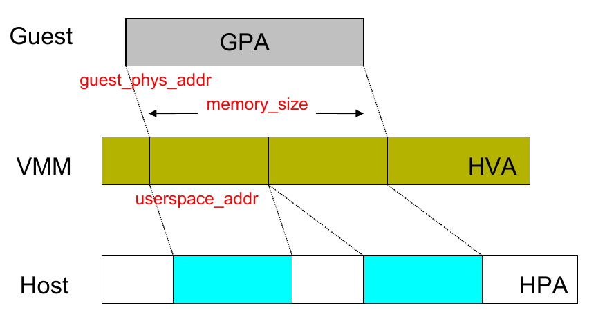
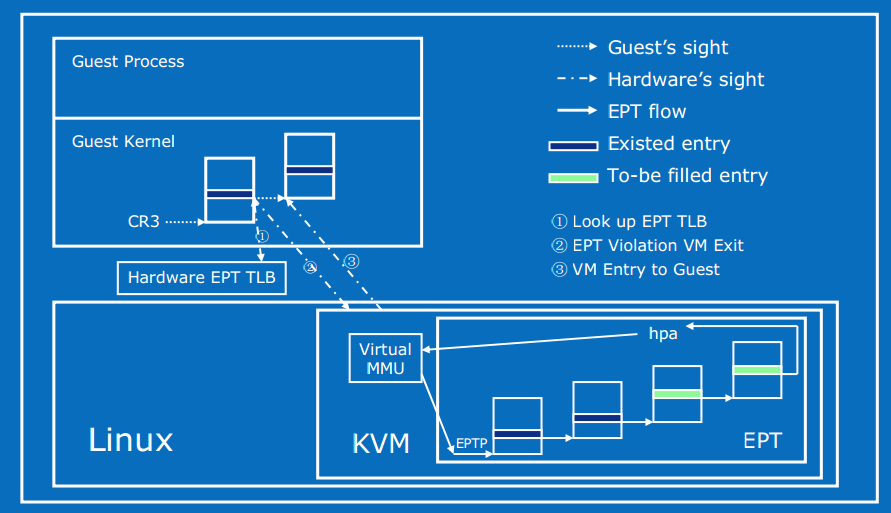
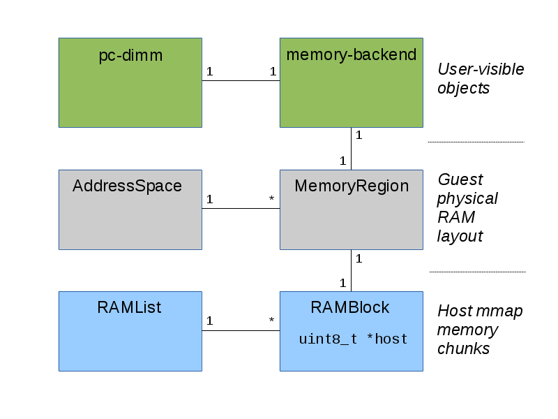

QEMU-KVM内存虚拟化
qemu-kvm的内存虚拟化方案，是由qemu和kvm共同完成的，所以可以分为两部分。qemu完成内存的申请，kvm实现内存的管理。内部实现及其复杂，本篇博客尽量整理搜集相关资料，目的是分析出如何将 GPA 转换成 HVA 。
词汇约定
| 缩写 | 意义 |
|---|---|
| VA | Virtual Address, 虚拟地址 |
| PA | Physical Address, 物理地址 |
| PML4 | Page Map Level 4 |
| PDPT | Page Directory Pointer Table |
| PD | Page Directory |
| PT | Page Table |
| PGD | Page Global Directory |
| PUD | Page Upper Directory |
| PMD | Page Middle Directory |
| GVA | Guest Virtual Address |
| GPA | Guest Physical Address |
| HVA | Host Virtual Address |
| HPA | Host Physical Address |
| GFN | Guest Frame Number，虚拟机的页框号 |
| PFN | Host Page Frame Number，宿主机的页框号 |
| SPT | Shadow Page Table，影子页表 |
页表
64位CPU上支持 48 位的虚拟地址寻址空间，和 52 位的物理地址寻址空间。Linux采用4级页表机制将虚拟地址（VA）转换成物理地址(PA)，先从页表的 基地址寄存器 (CR3) 中读取页表的起始地址，然后加上页号得到对应页的页表项，从中取出页的物理地址，再加上偏移量得到 PA。
分级的查询页表过程为：
Page Map Level 4(PML4) =>
Page Directory Pointer Table(PDPT) =>
Page Directory(PD) =>
Page Table(PT)在某些地方被称为：
Page Global Directory(PGD) =>
Page Upper Directory(PUD) =>
Page Middle Directory(PMD) =>
Page Table(PT)QEMU内存虚拟化
QEMU 利用 mmap 系统调用，在QEMU进程的虚拟地址空间中申请连续的大小的空间，作为 Guest 的物理内存，即 内存的申请是在用户空间完成的。
通过 KVM 提供的 API，QEMU 将 Guest 内存的地址信息传递并注册到 KVM 中维护，即内存的管理是由内核空间的 KVM 实现的。
在这样的架构下，内存地址访问有四层映射：
GVA -> GPA -> HVA -> HPA
GVA - GPA 的映射由 guest OS 负责维护，而 HVA - HPA 由 host OS 负责维护。
而内存虚拟化的关键是 GPA -> HVA 的映射。

为了提高从GVA到HPA的转换效率，KVM常用的实现有 SPT(Shadow Page Table) 和 EPT/NPT ，前者通过软件维护影子页表直接将GVA转换成HPA，省略中间的映射；后者通过硬件特性实现二级映射（ two dimentional paging），将GPA转换成HPA。
影子页表（SPT）
影子页表是在KVM维护记录的，可以直接将 GVA 转换为 HPA，影子页表可被载入物理 MMU 为客户机直接寻址使用， 减少了地址转换带来的开销。
在guest中的虚拟内存管理中，通过查询CR3寄存器完成完成 GVA->GPA。
CR3保存了Guest的页表基址地址，然后载入MMU中进行地址转换。
在加入了SPT技术后，当Guest访问CR3时，KVM捕获此访问操作，即 EXIT_REASON_CR_ACCESS，之后KVM载入特殊的CR3和影子页表。之后访存操作和传统方式一样，只需要经过一层影子页表就可以访问到物理地址。
而且，在 TLB 和 CPU 缓存上缓存的是来自影子页表中GVA和HPA之间的映射，也因此提高了缓存的效率。
影子页表异常处理机制
在通过影子页表进行寻址的过程中，有两种原因会引起影子页表的缺页异常，一种是由客户机本身所引起的缺页异常， 具体来说就是客户机所访问的客户机页表项存在位 (Present Bit) 为 0，或者写一个只读的客户机物理页，再者所访问的客户机虚拟地址无效等。
另一种异常是由客户机页表和影子页表不一致引起的异常。
当Guest对页表修改时会触发Page Fault，VM-EXIT 到 KVM，之后 KVM 会对 GVA 对应的页表项进行访问权限检查，结合错误码进行判断与处理。
如果该异常是由客户机本身引起的，KVM 直接把该异常交由客户机的缺页异常处理机制来进行处理。
如果该异常是由客户机页表和影子页表不一致引起的，KVM 则根据客户机页表同步影子页表。
为此，KVM 要建立起相应的影子页表数据结构，根据 Guest 页表和 mmap 映射找到 GPA 到 HVA 的映射关系，在SPT中填充GVA->HPA的页表项，还要根据Guest页表项的访问权限修改SPT对应页表项的访问权限。
哈希链表
为了快速检索Guest页表对应的影子页表，KVM为每个客户机维护了一个hash表来进行客户机页表到影子页表之间的映射。
对于每一个Guest来说，其页目录和页表都有唯一的GPA，通过页目录/页表的GPA就可以在哈希链表中快速地找到对应的影子页目录/页表。
当Guest切换进程时，Guest会把待切换进程的页表基址载入 CR3，而 KVM 将会截获这一特权指令。KVM在哈希表中找到与此页表基址对应的影子页表基址，载入Guest CR3，使Guest在恢复运行时 CR3 实际指向的是新切换进程对应的影子页表。
缺点：
影子页表的引入也意味着 KVM 需要为每个客户机的每个进程的页表都要维护一套相应的影子页表，这会带来较大内存上的额外开销。
同时影子页表的建立是很耗时的，如果 Guest 的进程过多，将导致影子页表频繁切换。
此外，客户机页表和和影子页表的同步也比较复杂。
扩展页表（EPT/NPT）
Intel 的 EPT（Extent Page Table）技术和 AMD 的 NPT（Nest Page Table）技术都对内存虚拟化提供了硬件支持。
这两种技术原理类似，都是在硬件层面上实现GVA到HPA之间的转换。
下面就以 EPT 为例分析一下 KVM 基于硬件辅助的内存虚拟化实现。

EPT 技术采用了在两级页表结构，即原有Guest OS页表对GVA->GPA映射的基础上，又引入了 EPT 页表来实现GPA->HPA的另一次映射，这两次地址映射都是由硬件自动完成。
Guest运行时，客户机页表被载入 CR3，实现 GVA 到 GPA 的转换。
而 EPT 页表被载入专门的 EPT 页表指针寄存器 EPTP。EPT 中维护着 GPA 到 HPA 的映射，而 EPTP 负责指向 EPT。
EPT 页表对地址的映射机理与Guest页表对地址的映射机理相同。
在GPA到HPA转换的过程中，由于缺页、写权限不足等原因也会导致VM exit，产生 EPT 异常。
对于 EPT Page Fault，KVM 首先根据引起异常的GPA映射到对应的HVA，然后为此虚拟地址分配新的物理页，最后 KVM 再更新 EPT 页表，建立起引起异常的GPA到HPA之间的映射。对 EPT 写权限引起的异常，KVM 则通过更新相应的 EPT 页表来解决。
优势：
Guest 的缺页在 Guest OS 内部处理，不会 VM-EXIT 到 KVM 中。
地址转化基本由硬件（MMU）查页表来完成，大大提升了效率。
KVM 只需为每个客户机维护一套 EPT 页表，也大大减少了内存的额外开销。
内存数据结构
QEMU虚拟内存最重要的几个数据结构 AddressSpace 、 MemoryRegion 、 MemoryRegionSection 、 RAMBlock 、 kvm_userspace_memory_region 。

PCDIMMDevice
PC DIMM内存设备模拟，通过 QOM(qemu object model) 定义的虚拟内存条。可通过 QEMU 命令行进行管理。通过增加/移除该对象实现 VM 中内存的热插拔。
1 | /include/hw/mem/pc-dimm.h |
HostMemoryBackend
通过 QOM 定义的一段 Host 内存，为虚拟内存条提供内存。可通过 QMP 或 QEMU 命令行进行管理。
1 | /** |
MemoryRegion
1 | struct MemoryRegion { |
MemoryRegion 是树状结构，有多种类型，可以表示一段 ram ，rom ，MMIO 。 alias 表示一个 MemoryRegion 的一部分区域。MemoryRegion 也可以表示一个container，这就表示它只是其他若干个 MemoryRegion 的容器。在 MemoryRegion 中，ram_block表示的是分配的实际内存。
address_space_memory 的 root 为 system_memory ，address_space_io 的 root 为 system_io 。
1 | static MemoryRegion *system_memory; |
AddressSpace
1 | /include/exec/memory.h |
AddressSpace 表示的CPU/设备看到的地址空间，比如内存地址空间 AddressSpace address_space_memory; 和IO地址空间 AddressSpace address_space_io; 。
每个 AddressSpace 一般包含一系列 MemoryRegion ： AddressSpace 的 root 指向根级 MemoryRegion ，该 MemoryRegion 有可能有自己的若干个 subregion ，于是形成树状结构。
所有的 AddressSpace 通过结构中的 address_spaces_link 连接成链表，表头保存在全局的 AddressSpace 结构中。
RAMBlock
1 | /include/exec/ram_addr.h |
在这里，host 指向了动态分配的内存，用于表示实际的虚拟机物理内存，而 offset 表示了这块内存在虚拟机物理内存中的偏移。每一个 ram_block 还会被连接到全局的 ram_list 链表上。
AddressSpace 的 root及其子树形成了一个虚拟机的物理地址，但是在往kvm进行设置的时候，需要将其转换为一个平坦的地址模型，也就是从0开始的。这个就用FlatView 表示，一个 AddressSpace 对应一个 FlatView 。
1 | /* Flattened global view of current active memory hierarchy. Kept in sorted |
RAMList
ram_list 是一个全局变量，以链表的形式维护了所有的 RAMBlock 。
1 | include/exec/ramlist.h |
MemoryRegionSection
在内存虚拟化中，还有一个重要的结构是 MemoryRegionSection ，这个结构通过函数 section_from_flat_range 可由 FlatRange 转换过来。
1 | /** |